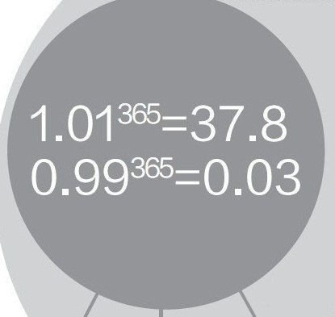

Filter by Date
Reading List
Answer added to your Reading List.
There
is a ton of web scraping software tools. Some are paid, and some are
free, but there is only ONE that works well, Open Source, Free, and it
is kept updated!I’ve been using it for three years ... (more)Loading...
Answer added to your Reading List.
Consultancy Scams
The greatest scams of higher educations are the ‘higher education consultancies’. They are broad daylight robbery agencies that run one of the greatest scamming business in the ... (more)Loading...
The greatest scams of higher educations are the ‘higher education consultancies’. They are broad daylight robbery agencies that run one of the greatest scamming business in the ... (more)Loading...
Question added to your Reading List.
Post added to your Reading List.
When you're learning new material, it can be overwhelming when you think about how much time you need to truly understand it all. This studying technique can help you stay focused and take on mor... (more)Loading...
Answer added to your Reading List.
Most definitely, Yes! It is possible to get a 100% scholarships at MIT, Stanford, Harvard or Yale.
Now, I'll assume that by '100% scholarship' you mean completing your graduation / under-graduatio... (more)Loading...
Now, I'll assume that by '100% scholarship' you mean completing your graduation / under-graduatio... (more)Loading...
Answer added to your Reading List.
Slow and steady wins the race. Keep moving daily. Don't break your schedule.
Don't assume you understood if you didn't. Its okay to seek clarification from someone.
Cut off all distraction. Mobil... (more)Loading...
Don't assume you understood if you didn't. Its okay to seek clarification from someone.
Cut off all distraction. Mobil... (more)Loading...
Question added to your Reading List.
Answer added to your Reading List.
Mango Shopping
Suppose you go shopping for mangoes one day. The vendor has laid out a cart full of mangoes. You can handpick the mangoes, the vendor will weigh them, and you pay according to a fix... (more)Loading...
Answer added to your Reading List.
First, an important background citation:
Breiman, L. 2001. “Statistical Modeling: The Two Cultures (with Comments and a Rejoinder by the Author).” Statistical Science 16:199–231.
Breiman, L. 2001. “Statistical Modeling: The Two Cultures (with Comments and a Rejoinder by the Author).” Statistical Science 16:199–231.
Supervised Learning
... (more)Loading...Answer added to your Reading List.
Now this guy is a legend. Go on and read through it. He dared to do what very few in the world would ever dream to . He is Mr Bharadwaj Dayala from Vishakapatnam AP India.
He has traveled across 5... (more)Loading...
Post added to your Reading List.
Answer added to your Reading List.
Rob has some of the essence of the answer.
But there is one big thing Missing.
A PhD position is a JOB.
You will be performing leading edge research that will lead to papers and a detailed Thesis... (more)Loading...
But there is one big thing Missing.
A PhD position is a JOB.
You will be performing leading edge research that will lead to papers and a detailed Thesis... (more)Loading...
Answer added to your Reading List.
(All of these resources are available online for free!)
Check out Think Stats: Probability and Statistics for Programmers. It's specifically helpful for machine learning since it emphasizes applic... (more)Loading...
Check out Think Stats: Probability and Statistics for Programmers. It's specifically helpful for machine learning since it emphasizes applic... (more)Loading...
Answer added to your Reading List.
Agile is bullshit, that's why.
OK let me qualify... The Agile Process is perfectly fine, and it
addresses the physical and psychological aspects of managing software
development teams quite well. T... (more)Loading...
Answer added to your Reading List.
You can exploit the YouTube embed parameters to loop a video. For example, if you wanted to loop over the video:
Regular video:
You can change it to the... (more)Loading...
Regular video:
http://www.youtube.com/watch?v=MKzqP4-0Z6MYou can change it to the... (more)Loading...
Answer added to your Reading List.
 Brandon Lee, Entrepreneur | Investor | Connector |... (more) Entrepreneur | Investor | Connector | Dreamer | Optimist
Brandon Lee, Entrepreneur | Investor | Connector |... (more) Entrepreneur | Investor | Connector | Dreamer | Optimist716 upvotes by Jessica Su, Ankush Phawa, Aso Saputra, (more)Loading...

Usually they fall.
And then they fall again.
... (more)Loading...
Answer added to your Reading List.
Thanks for your interest. This is a complicated question.
I archive all my course material online, and this is no exception. Furthermore, unlike Udacity/Coursera/etc., we didn't see why a student... (more)Loading...
I archive all my course material online, and this is no exception. Furthermore, unlike Udacity/Coursera/etc., we didn't see why a student... (more)Loading...
Answer added to your Reading List.
1. Always keep a book at hand
Sometimes while commuting or even in between classes when the teacher is late or when people all around me are discussing things which do not hold my interest, I start... (more)Loading...
Sometimes while commuting or even in between classes when the teacher is late or when people all around me are discussing things which do not hold my interest, I start... (more)Loading...
Question added to your Reading List.
Answer added to your Reading List.
Depending on how comfortable you are with C++, you could go with one of the following.
- Decision tree learning (for example Quinlan's C4.5). You will need to implement the representation of the mode...